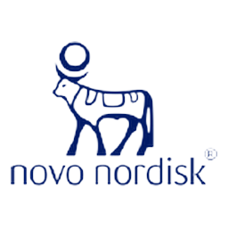
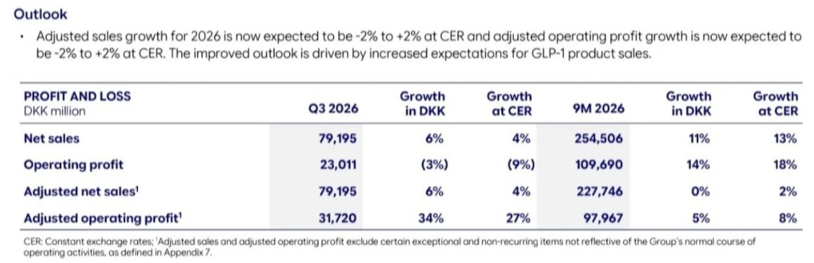

Quartalszahlen

Novo Nordisk hebt Prognose an: bereinigter Betriebsgewinn im Quartal +27 %, Wegovy-Pille bringt 5,4 Mrd. DKK
$NOVO-B
Novo Nordisk steigert im dritten Quartal 2026 den Umsatz auf 79,2 Mrd. DKK (+6 %) und den bereinigten Betriebsgewinn auf 31,7 Mrd. DKK (+34 %, währungsbereinigt +27 %). Der berichtete Betriebsgewinn sinkt wegen Abschreibungen von 8,7 Mrd. DKK. Der Konzern hebt seine Jahresprognose an.

Kurz gesagt
Umsatz: 79,2 Mrd. DKK (+4 %)
Gewinn (bereinigt): 31,7 Mrd. DKK (+27 %)
Veränderungen zum Vorjahr, währungsbereinigt.
- Treiber: Mehr Absatz von GLP-1-Mitteln (Wegovy, Ozempic), vor allem gegen Fettleibigkeit. Die neue Wegovy-Pille setzt im ersten Quartal nach Marktstart 5,4 Mrd. DKK um.
- Prognose: Novo hebt die Jahresprognose an. Bereinigter Umsatz und bereinigter Betriebsgewinn sollen währungsbereinigt zwischen minus 2 % und plus 2 % wachsen.
- Einordnung: Der berichtete Betriebsgewinn fällt um 3 % auf 23,0 Mrd. DKK, weil Novo 8,7 Mrd. DKK abschreibt. Das Plus beim bereinigten Gewinn hängt auch an Umbaukosten von 9 Mrd. DKK im Vorjahr.
Gewinn springt, aber auch wegen des niedrigen Vorjahres
Novo Nordisk setzt im dritten Quartal 2026 79,2 Mrd. DKK um. Das sind 6 Prozent mehr als vor einem Jahr, währungsbereinigt 4 Prozent. Der bereinigte Betriebsgewinn steigt um 34 Prozent auf 31,7 Mrd. DKK, währungsbereinigt um 27 Prozent. Der berichtete Betriebsgewinn liegt dagegen mit 23,0 Mrd. DKK um 3 Prozent unter dem Vorjahr (währungsbereinigt minus 9 Prozent).
Der Unterschied hat zwei Gründe. Erstens bucht Novo im Quartal Abschreibungen von 8,7 Mrd. DKK ohne Zahlungsfluss: 4,6 Mrd. DKK auf den Wirkstoff Ziltivekimab und 4,1 Mrd. DKK, weil das Produktionsnetz verkleinert wird. Die bereinigten Zahlen rechnen das heraus. Zweitens enthielt das dritte Quartal 2025 Umbaukosten von 9 Mrd. DKK, das macht den Vergleich für 2026 leichter. Über neun Monate wächst der bereinigte Betriebsgewinn um 5 Prozent auf 98,0 Mrd. DKK, währungsbereinigt um 8 Prozent. Der bereinigte Umsatz liegt über neun Monate auf Vorjahresniveau (währungsbereinigt plus 2 Prozent).

Ausblick und Kennzahlen zum dritten Quartal 2026. Quelle: Novo Nordisk, Finanzbericht Q3 2026. Ausschnitt nur zugeschnitten, sonst unverändert.Wegovy-Pille und Marktanteile
Wachstumstreiber sind GLP-1-Mittel in den USA und im internationalen Geschäft, vor allem gegen Fettleibigkeit. Die Wegovy-Pille erlöst im Quartal 5,4 Mrd. DKK und ist inzwischen in acht Märkten gestartet, darunter USA, Großbritannien, Deutschland und die Vereinigten Arabischen Emirate. Bei neuen Patienten im US-Markt für Abnehmmittel mit Markenschutz hält Wegovy nach Unternehmensangaben mehr als 50 Prozent. Die Ozempic-Pille ist seit Mai in den USA auf dem Markt, die wöchentlichen Neuverordnungen liegen etwa doppelt so hoch wie vor dem Start des Vorgängers Rybelsus.
Pipeline: CagriSema als nächster Schritt
Für CagriSema meldet Novo in einer Studie 21 Prozent Gewichtsverlust nach 68 Wochen. In einer Diabetesstudie liegt der Gewichtsverlust bei 12,4 Prozent gegenüber 9,1 Prozent unter Tirzepatid 5 mg, bei vergleichbarer Senkung des Blutzuckerwerts HbA1c. Der US-Start ist für Anfang 2027 geplant, vorbehaltlich der Zulassung. Eine Phase-3-Studie mit einer weiteren Tablette (Zenagamtid) hat im September begonnen. Das Hämophilie-Mittel Frehemgo hat eine positive Empfehlung der europäischen Arzneimittelbehörde, der Start in Europa ist rund um den Jahreswechsel geplant.
Mike Doustdar, President und CEO von Novo Nordisk
„Wir haben ein stärker als erwartetes drittes Quartal geliefert."
Aus dem Englischen übersetzt, aus der Pressemitteilung. Foto: Novo Nordisk
Ausblick und Einordnung
Novo hebt die Prognose für 2026 an: Der bereinigte Umsatz und der bereinigte Betriebsgewinn sollen währungsbereinigt zwischen minus 2 Prozent und plus 2 Prozent wachsen. Das Unternehmen begründet das mit höheren Erwartungen an den Absatz von GLP-1-Mitteln. Die Spanne bleibt breit, ein starkes Wachstum erwartet Novo für dieses Jahr also nicht.
Für die Einordnung gilt: Die Zahlen zeigen, dass die neuen Präparate ankommen, aber ein Teil des Gewinnsprungs ist ein Basiseffekt. Offen bleiben der Preisdruck im US-Markt und der Wettbewerb um Abnehmmittel. Dieser Beitrag ist keine Anlageberatung.
Hinweis: Dieser Text dient der allgemeinen Information und ist weder Anlage-, Steuer- noch Rechtsberatung. Kapitalanlagen sind mit Risiken verbunden, bis hin zum Totalverlust.